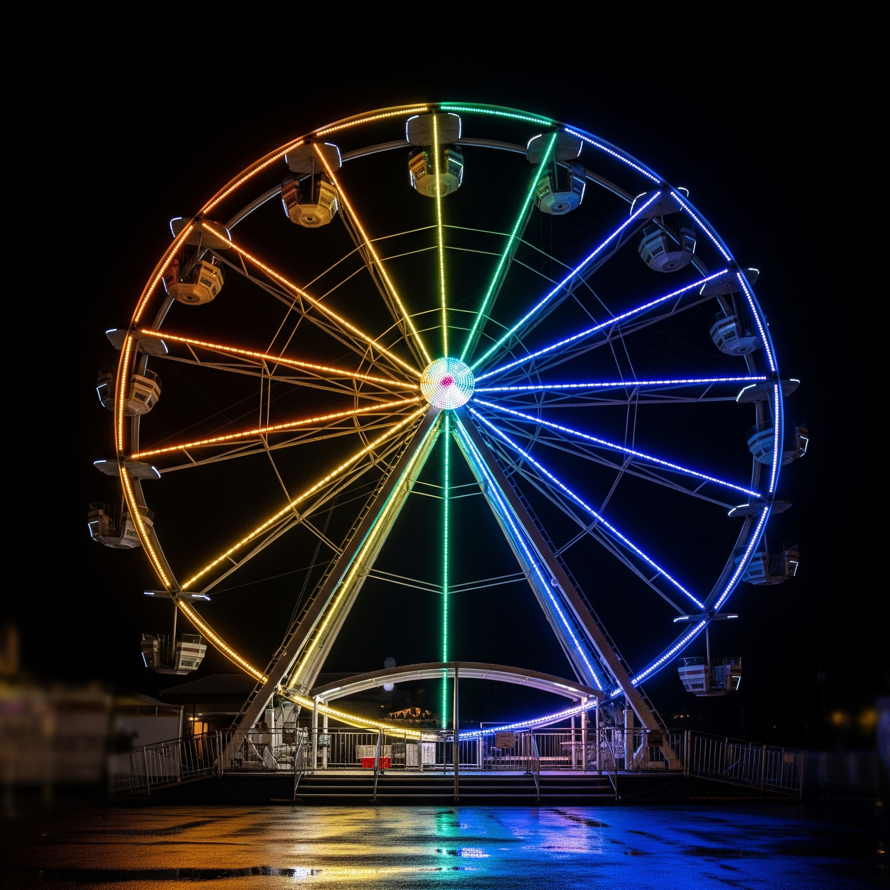

TOP10
- 瞳の中の暗殺者 /2000年
次々と警察官が殺害されていく中、蘭があることをきっかけに記憶喪失になってしまう。そんな中、犯人は蘭を殺しにかかる。どうやら蘭の記憶の中に犯人がいるようで？
- ベイカーストリートの亡霊 /2002年

イギリスのベイカー街を舞台にした体感シミュレーションゲーム「コクーン」に挑戦することになったコナンたち。しかし、これはゲーム内で脱落すると現実世界でも死んでしまうというもので...
- 純黒の悪夢（ナイトメア）/2016年

東都水族館に遊びに来た少年探偵団だったが、そこで黒の組織の幹部「キュラソー」と出会う。コナンたちは黒の組織の猛攻に耐えることができるのか。
- 天国へのカウントダウン /2001年
日本一の高さを誇るツインタワービルを訪れたコナンたちだったが、ビルのオーナーや関係者が次々と殺害されてしまう。そんな中、新一の身体を小さくした黒の組織の人物たちもなぜかツインタワービルに集まっていて...
- 沈黙の15分（クオーター）/2011年
都知事に対する脅迫状が届き地下鉄のトンネルが爆破される。知事が国土交通大臣時代に建てたダムの関係者が怪しいと睨んだコナンはダムのある大雪原へと向かう。
- 14番目の標的（ターゲット）/1998年
- 漆黒の追跡者（チェイサー）/2009年
- ハロウィンの花嫁 /2022年
- 黒鉄の魚影（くろがねのサブマリン）/2023年
- 天空の難破船（ロストシップ）/2010年
皆さんが好きなコナン映画は何作目ですか？
ここに各映画の名前が表示されます